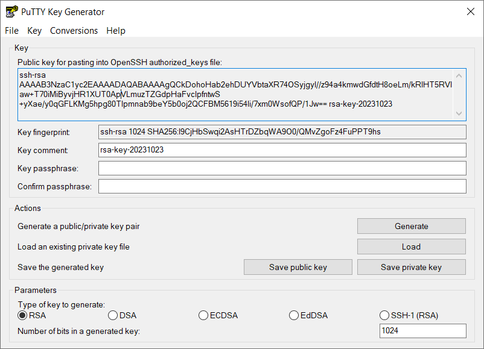
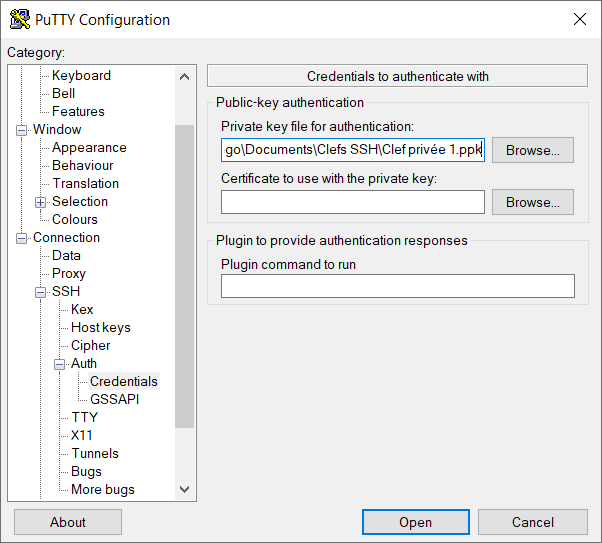
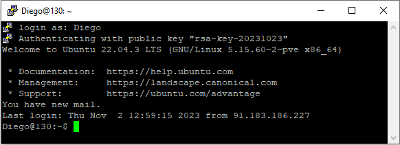

Introduction
Ce rapport a été rédigé dans le cadre du cours d'Administration Linux de l'ECAM (3e bachelier - génie électrique). Il constitue à la fois une synthèse personnelle sur la matière abordée en classe et une partie intégrante de l'évaluation continue. Il témoigne des manipulations effectuées et des concepts assimilés tout au long du module. Dans un esprit d'amélioration continue, l'auteur reste ouvert à toute suggestion et/ou correction de cette synthèse et est contactable à l'adresse suivante 20342@ecam.be.
Dans un double objectif pédagogique et pratique, ce rapport a été rédigé sous deux formats : un site web en HTML, CSS, et JavaScript pour concrétiser l'apprentissage en développement web, et une version PDF pour une présentation plus formelle qui sera remise comme évaluation. Pour profiter de toutes les fonctionnalités et de la mise en page optimale, se référer à la version web.
Connexion à la Machine Virtuelle
La machine virtuelle numéro 130, hébergée sur les serveurs de l'ECAM, est accessible à distance via le protocole SSH qui permet une gestion sécurisée du serveur à distance. La connection se fait à partir de PuTTY, un client de terminal SSH open source pour Windows OS.
Le protocole SSH (Secure Shell) est une méthode standard pour sécuriser les communications réseau. En utilisant SSH, vous pouvez accéder à des machines distantes, exécuter des commandes et déplacer des fichiers, tout cela avec une sécurité renforcée. Les données envoyées sur le réseau sont cryptées, ce qui empêche les écoutes indiscrètes et les attaques potentielles.
Après avoir encodé le Host name, le Port et le type de connexion, nous pouvons accéder à ma machine virtuelle. Celle-ci demande un login et un password, initialement admin-3be et ECAMecam. Le password sera changé au moyen de la commande passwd et le nom d'utilisateurs sera remplacé par Diego.
Le nom de domaine fonctionne comme un pointeur vers une adresse IP spécifique qui est l'identifiant numérique d'un serveur sur le réseau. Le système de noms de domaine (DNS) traduit ce nom (plus simple à retenir) en une adresse IP que les ordinateurs peuvent comprendre.
Dans l'exemple pat.infolab.ecam.be, nous avons une structure hiérarchique, be indique le domaine de premier niveau correspondant à la Belgique, ecam est bien évidement l'établissement, infolab désigne le laboratoire d'informatique, et pat est le nom attribué à un serveur en particulier.
Le port est un identifiant numérique qui est utilisé pour permettre à plusieurs services réseau de fonctionner sur un seul serveur sans interférence. Les ports les plus utilisés sont les ports 80 pour HTTP ou le port 443 pour HTTPS. Pour plus d'informations, se référer au cours d'introduction aux résaux.
Bible des Lignes de Commandes Linux
Auto-complétion avec "Tab"
L'auto-complétion est une fonctionnalité qui permet de compléter automatiquement les commandes, options ou noms de fichiers en appuyant sur la touche "Tab".
Manuel (man)
Utilisez la commande man suivie du nom de la commande pour obtenir un manuel détaillé sur son utilisation.
Mise à jour
apt-get update && apt-get upgrade -yapt-get update: Met à jour la liste des paquets.apt-get install [nom du paquet]: Installe un paquet.apt-get upgrade -y: Met à niveau les paquets installés. Le flag -y confirme automatiquement toutes les invites.
Navigation dans l'Arborescence
pwd: Affiche le répertoire de travail actuel.cd: Change le répertoire de travail.cd ..: Remonte au répertoire parent.cd /chemin/vers/le/dossier: Se déplace vers le dossier spécifié.
Lister le Contenu d’un Dossier
ls: Liste le contenu du répertoire.ls -l: Affiche en format long.ls -a: Inclut les fichiers cachés.
Création de Dossiers et Fichiers
mkdir nom_du_dossier: Crée un nouveau dossier.touch nom_du_fichier: Crée un nouveau fichier vide.
Manipulation de Fichiers
mv: Déplace ou renomme des fichiers/dossiers.cp: Copie des fichiers/dossiers.
Éditer un Fichier
viouvim: Éditeur de texte en mode console.nano: on préferera cette commande car moins de raccourcis.
Afficher le Contenu d'un Fichier
cat nom_du_fichier: Affiche le contenu complet.more nom_du_fichier: Affiche le contenu page par page.head nom_du_fichier: Affiche les premières lignes.tail nom_du_fichier: Affiche les dernières lignes.
Supprimer Fichiers et Dossiers
rm -r nom_du_fichier: Supprime un fichier.rmdir nom_du_dossier: Supprime un dossier (doit être vide).
Enchaînement de Commandes
;: Sépare des commandes exécutées successivement.&&: Exécute la seconde commande si la première est réussie.||: Exécute la seconde commande si la première échoue.
Bash Script
Combinez plusieurs commandes dans un fichier script pour automatiser des tâches répétitives.
Autres Commandes Utiles
echo: Affiche un message ou la valeur d'une variable.>et>>: Redirige la sortie d'une commande vers un fichier.read: Attend une entrée de l'utilisateur.date: Affiche la date et l’heure courantes.#: Commence un commentaire.
Exercice Pratique 1
Créez un petit fichier test dans votre dossier personnel
touch testfile.txtRenommez le, déplacez le dans un répertoir “mes_fichiers” et allez dans ce répertoire en une seule commande!
mv testfile.txt newname.txt && mkdir -p mes_fichiers && mv newname.txt mes_fichiers/ && cd mes_fichiersLisez le contenu du fichier sans l’éditer
cat newname.txtSupprimez le, remontez dans votre dossier personnel et supprimez le répertoire “mes_fichiers” en une seule commande!
rm newname.txt && cd .. && rmdir mes_fichiersExercice Pratique 2
Écrivez un script qui demande votre nom, puis enregistre la date et l’heure actuelles dans un fichier chaque fois qu'il est exécuté.
Exécutez le script plusieurs fois, puis vérifiez le contenu du fichier pour voir les enregistrements de la date et de l’heure.
2.1 Création du script
Créez un fichier nommé monscript.sh et ajoutez les commandes nécessaires pour qu'il puisse demander le nom de l'utilisateur et l'enregistrer dans un fichier log avec la date et l'heure actuelles.
echo '#!/bin/bash' > monscript.sh
echo 'echo "Quel est votre nom?"' >> monscript.sh
echo 'read nom' >> monscript.sh
echo 'echo "Bonjour $nom"' >> monscript.sh
echo 'echo "$nom a lancé le script le $(date)" >> log.txt' >> monscript.sh2.2 Rendre le script exécutable
Changez les permissions du fichier pour le rendre exécutable.
chmod +x monscript.sh2.3 Exécution du script
Il vous demandera votre nom, vous saluera dans le terminal, et enregistrera votre nom avec la date et l'heure dans un fichier log.txt.
./monscript.sh2.4 Lecture du fichier log
cat log.txt2.5 Eventuellement suppression du script et du fichier log
rm monscript.sh
rm log.txtExercice pratique 3
Créer un script de mise à jour automatique à 02h00 UTC
Création et édition du script
sudo nano /usr/local/bin/update_upgrade_script.shMise à jour des listes de paquets et mise à niveau en silence et enregistrement de la date et de l'heure dans le fichier log
#!/bin/bash
sudo apt-get update -y > /dev/null 2>&1
sudo apt-get upgrade -y > /dev/null 2>&1
echo "$(date)" >> /var/log/update_upgrade.logRendre le script exécutable
sudo chmod +x /usr/local/bin/update_upgrade_script.shOuverture de crontab (en sudo pour avoir tous les droits pour les mises à jour)
sudo crontab -eExecution à 02h00 UTC tous les jours, pour obtenir la syntaxe adéquate cf crontab guru (site web)
0 2 * * * /usr/local/bin/update_upgrade_script.sh
Dans l'ordre on trouve :
Minute : La minute de l'heure à laquelle la commande doit s'exécuter. Les valeurs possibles vont de 0 à 59.
Heure : L'heure à laquelle la commande doit s'exécuter. Les valeurs possibles vont de 0 à 23, où 0 représente minuit.
Jour du mois : Le jour du mois où la commande doit s'exécuter. Les valeurs possibles vont de 1 à 31.
Mois : Le mois de l'année pendant lequel la commande doit s'exécuter. Les valeurs vont de 1 (janvier) à 12 (décembre).
Jour de la semaine : Le jour de la semaine où la commande doit s'exécuter. Les valeurs vont de 0 (dimanche) à 6 (samedi).
* : Un astérisque représente toutes les valeurs possibles pour ce champ. Par exemple, une astérisque dans le champ des heures signifie "à chaque heure".
Exécution manuelle du script pour tester son fonctionnement :
sudo /usr/local/bin/update_upgrade_script.shOuverture du fichier log
cat /var/log/update_upgrade.logSupression du fichier log
sudo echo "" > /var/log/update_upgrade.logPartitionnement et Système de Fichiers
Aperçu
Le partitionnement et le système de fichiers sont deux composantes cruciales pour la gestion et l'organisation des données sur un disque dur. Le partitionnement réfère à la division d'un disque dur en sections isolées, chacune fonctionnant comme une unité séparée. Le système de fichiers, quant à lui, est la méthode utilisée pour stocker et organiser les fichiers sur une partition.
Partitionnement Manuel vs Automatique
Manuel : Il est parfois nécessaire d’opter pour un partitionnement manuel, surtout pour des configurations spécifiques. Par exemple :
- /var : Contient les logs, partitionnée séparément pour éviter de saturer le disque.
- /usr : Utilisé dans les machines avec de nombreux utilisateurs différents.
- /home : Pour avoir les dossiers personnels sur une autre partition.
Le but est principalement de protéger la racine /. La partition swap est souvent mentionnée, mais elle est principalement utile pour l'hibernation de la machine, un cas non typique pour un serveur.
Automatique : Suffisant dans la majorité des cas et peut être révisé ultérieurement selon les besoins spécifiques.
Le Système de Fichier
Il détermine comment les données sont lues, écrites, et organisées sur le disque. Différents systèmes de fichiers ont des caractéristiques et des avantages spécifiques, influençant la performance et la sécurité des données.
La Hiérarchie des Fichiers
Le système de fichiers Linux est structuré selon une hiérarchie bien définie. Pour plus de détails Filesystem Hierarchy Standard.
/bin/: contient des exécutables binaires essentiels pour le démarrage du système et des commandes nécessaires pour l'utilisateur root et les autres utilisateurs./boot/: contient les fichiers nécessaires au démarrage du système, comme le noyau Linux, les images initrd et les fichiers de configuration du chargeur de démarrage./dev/: contient des fichiers de périphériques qui représentent les périphériques matériels du système./etc/: contient des fichiers de configuration système et des scripts pour initialiser le système./home/: contient les répertoires personnels des utilisateurs, où ils stockent leurs fichiers personnels./lib/et/lib64/: contiennent des bibliothèques partagées et des modules du noyau nécessaires au démarrage du système et à l'exécution des commandes binaires./media/: un point de montage pour les dispositifs de stockage amovibles, comme les clés USB et les disques durs externes./mnt/: utilisé pour monter les systèmes de fichiers temporaires./opt/: contient des logiciels et des add-ons optionnels qui ne font pas partie de l'installation standard./proc/: un système de fichiers virtuel qui fournit des informations sur les processus en cours d'exécution et le système./root/: le répertoire personnel de l'utilisateur root./run/: contient des informations sur le système depuis le démarrage./sbin/: contient des binaires système essentiels, principalement destinés à être utilisés par l'utilisateur root./srv/: contient des données spécifiques au site qui sont servies par le système./tmp/: un répertoire temporaire où les fichiers sont stockés temporairement./usr/: contient des binaires, des bibliothèques, de la documentation, etc., pour tous les programmes utilisateur./var/: contient des fichiers variables, comme les fichiers journaux et les bases de données.
LVM (Logical Volume Manager)
Avantages
- Élimine les limitations souvent associées aux partitions traditionnelles (primaire, étendue, etc.).
- Flexibilité dans la gestion des données.
- Permet de conserver de l'espace libre pour un ajout facile à n’importe quel volume.
- Le redimensionnement des volumes est presque sans risque.
Inconvénients
- Si un volume physique échoue, tous les volumes logiques qui l'utilisent sont perdus. Une solution consiste à utiliser LVM sur des disques en RAID pour une sécurité accrue.
Pour plus d'informations LVM sous Linux.
Utilisateurs et permissions
1. Types d’Utilisateurs :
- Régulier : Ils ont des droits d'accès de base et se reconnaissent par
$au niveau du prompt. - Root ou Superuser : Ils ont tous les droits et privilèges, identifiés par
#au niveau du prompt. - Service : Associé à une application spécifique et non utilisable en console.
2. Principe d'Accès :
- Il est recommandé de se connecter en tant qu'utilisateur régulier et d'obtenir des droits root temporairement au besoin pour éviter des actions accidentelles pouvant affecter le système.
3. Gestion des Utilisateurs et Groupes :
- Les utilisateurs et groupes sont gérés à l'aide de commandes comme
sudo adduser,sudo userdel,sudo addgroup, etsudo usermod.
4. Permissions :
Elles sont définies pour le propriétaire, le groupe et les autres utilisateurs, codées en binaire et contrôlées par les commandes chmod et chown.
Représentation symbolique:
- r: read (lecture)
- w: write (écriture)
- x: execute (exécution)
Types d'utilisateurs pour lesquels les droits sont définis :
- Propriétaire (u: user)
- Groupe (g: group)
- Autres (o: other)
Représentation numérique/octal:
- 4 correspond à r (lecture)
- 2 correspond à w (écriture)
- 1 correspond à x (exécution)
Combinaison des droits :
- rwx = 4 + 2 + 1 = 7
- rw- = 4 + 2 = 6
- r-x = 4 + 1 = 5
- r-- = 4
5. ACL (Access Control Lists) :
Pour des permissions plus fines, installez acl et configurez les droits d'accès pour plusieurs utilisateurs et groupes.
Résolution des exercices :
Exercice 1 : Création d'Utilisateurs
Créer les utilisateurs Master (super utilisateur) et Padawan (régulier) :
sudo adduser master
sudo adduser padawanExercice 2 : Création d’un Groupe
Créer un groupe "team" et ajouter les utilisateurs et root au groupe :
sudo addgroup team
sudo usermod -a -G team root
sudo usermod -a -G team master
sudo usermod -a -G team padawanCes lignes ajoutent les utilisateurs "root", "master" et "padawan" au groupe "team". L'option -a -G est utilisée pour ajouter les utilisateurs au groupe sans les retirer de leurs groupes existants. Cela permet de rassembler différents types d'utilisateurs au sein d'un même groupe pour une gestion et des permissions communes.
Exercice 3 : Création de Répertoires avec Permissions
Créer un dossier "share" avec des sous-dossiers pour "team", "master", et "padawan" et attribuer les permissions et propriétaires appropriés :
sudo mkdir -p /home/share/{team,master,padawan}
sudo chown master:team /home/share
sudo chmod 700 /home/share
sudo chown master:team /home/share/master
sudo chown padawan:team /home/share/padawan
sudo chmod 750 /home/share/master
sudo chmod 750 /home/share/padawan
sudo chmod 770 /home/share/teamCrée un répertoire principal "share" et trois sous-répertoires "team", "master" et "padawan" dans le répertoire "/home". L'option -p est utilisée pour créer des répertoires parents si nécessaire.
Change le propriétaire et le groupe des répertoires "master" et "padawan". "master:team" signifie que l'utilisateur "master" est le propriétaire et "team" est le groupe propriétaire.
Justification :
Pour /home/share:
Droits : rwx --x ---
Numérique : 771
Le propriétaire (master) a des droits complets (rwx = 7)
Le groupe (team) peut traverser le répertoire mais ne peut ni lire ni écrire (--x = 1).
Les autres n'ont aucun droit (--- = 0)
Pour /home/share/team:
Droits : rwx rwx ---
Numérique : 771
Le propriétaire (master) a des droits complets (rwx = 7)
Le groupe (team) a également des droits complets (rwx = 7)
Les autres n'ont aucun droit (--- = 0)
Pour /home/share/master:
Droits : rwx r-x ---
Numérique : 750
Le propriétaire (master) a des droits complets (rwx = 7)
Le groupe (team) peut lire et exécuter mais ne peut pas écrire (r-x = 5)
Les autres n'ont aucun droit (--- = 0)
Pour /home/share/padawan:
Droits : rwx r-x ---
Numérique : 750
Le propriétaire (padawan) a des droits complets (rwx = 7)
Le groupe (team) peut lire et exécuter mais ne peut pas écrire (r-x = 5)
Les autres n'ont aucun droit (--- = 0)
Exercice 4 : Access Control Lists (ACL)
Installer ACL et configurer des permissions détaillées :
sudo apt-get install acl
setfacl -m u:username:rwx /path/to/fileRemplacez "username" par le nom d'utilisateur et "/path/to/file" par le chemin du fichier pour lequel vous souhaitez définir l'ACL.
Exercice 5 : Créer un Dossier de Backup
Créer un dossier "backup", assurez-vous qu'il soit en lecture seule pour tous sauf root et créer un script pour le backup du dossier "share" :
sudo mkdir /home/backup
sudo chmod 744 /home/backupPour /home/backup:
Droits : rwx r-- r--
Numérique : 744
Le propriétaire (padawan) a des droits complets (rwx = 7)
Le propriétaire (root) a des droits complets (rwx = 7)
Le groupe et les autres peuvent lire le contenu du répertoire (r-- = 4), mais ne peuvent ni écrire ni exécuter.
Les permissions permettent à root de modifier le répertoire, tandis que les autres utilisateurs peuvent seulement voir ce qui est dans /home/backup, sans pouvoir y ajouter ou retirer des fichiers.
Les autres n'ont aucun droit (--- = 0)
#!/bin/bash
# Définir le chemin de sauvegarde
chemin_sauvegarde="/home/backup"
# Définir le chemin source
chemin_source="/home/share"
# Créer un nom de fichier de sauvegarde avec la date
nom_fichier_sauvegarde="share-backup-$(date +%F).tar.gz"
# Créer la sauvegarde en utilisant tar
tar -czf "${chemin_sauvegarde}/${nom_fichier_sauvegarde}" "${chemin_source}"
Accès avec clef SSH
- Utilisation de Puttygen pour générer une paire de clés de 1024 bits

- Sur le serveur distant, création du répertoire
~/.sshs'il n'existe pas déjàmkdir -p ~/.sshecho "copié_collé_de_la_publicKey_ci_dessus" >> ~/.ssh/authorized_keys - Configuration des permissions pour le répertoire
~/.sshet le fichier~/.ssh/authorized_keyset ajustement du propriétaire des fichierschmod 700 ~/.ssh chmod 600 ~/.ssh/authorized_keys chown $USER:$USER ~/.ssh -R - Ajout de la clé privée au profil PuTTY sous "Connection" > "SSH" > "Auth" > "Credential" > "Private key"

- Ouverture de la session

UFW - Uncomplicated Firewall
UFW est un outil de configuration de pare-feu sous Linux.
Un pare-feu, ou firewall en anglais, est un dispositif de sécurité réseau qui surveille et contrôle le trafic entrant et sortant d'un réseau en fonction de règles de sécurité prédéfinies. Un pare-feu peut être matériel, logiciel (le cas de UFW), ou une combinaison des deux.
Installation
sudo apt install ufwActivation
sudo ufw enablesudo ufw status verboseCommandes utiles
sudo ufw allow 22 #autorise le port 22
sudo ufw allow ssh #autorise ssh
sudo ufw deny 25 #refuse le port 25
sudo ufw allow from 192.168.0.20 to any port 22 #autorise ssh seulement depuis ip XXX
sudo ufw deny from 192.168.0.20 #refuse trafic ip XXX
sudo ufw delete allow 22 #suppression de règles
sudo ufw logging on #logs stockés dans /var/log/ufw.logATTENTION : Ne sciez pas la branche sur laquelle vous êtes assis !
Lors de la configuration de vos règles UFW, soyez extrêmement prudent pour ne pas bloquer votre accès SSH. Si vous configurez mal une règle et fermez le port SSH (par défaut 22), vous risquez de perdre l'accès à votre serveur et de vous retrouver dans l'incapacité de le gérer à distance.
Avant de procéder à des modifications, assurez-vous de :
- Connaître le port utilisé par votre service SSH. Par défaut, il s'agit du port 22, mais il peut avoir été modifié.
- Avoir une session SSH ouverte en parallèle que vous ne fermerez pas. Cela vous permettra de revenir en arrière si les nouvelles règles bloquent votre accès.
- Utiliser la commande
ufw allowpour maintenir l'accès au port SSH. Par exemple :
ufw allow 22/tcpFail2ban
Fail2Ban est un outil de sécurité qui protège le serveur contre des tentatives d'intrusion répétées. Lorsqu'il repère plusieurs échecs d'authentification, il peut bannir l'IP de l'attaquant. Ceci permet de se protéger efficacement contre les attaques par force brute.
Installation
sudo apt-get install fail2banCommandes utiles
sudo service fail2ban start
sudo service fail2ban stop
sudo service fail2ban restart
sudo systemctl enable fail2ban #active automatiquement au demarrage
sudo fail2ban-client status
sudo fail2ban-client status ssh #pour voir les tentatives de connectionsudo fail2ban-client set [JAIL_NAME] unbanip [IP_ADDRESS] #unban une IPsudo service fail2ban stop #arret et desinstallation
sudo systemctl disable fail2ban
sudo apt-get purge fail2banApplication : protection du port SSH
Copier le fichier de configuration principal:
sudo cp /etc/fail2ban/fail2ban.conf /etc/fail2ban/fail2ban.localCopier le fichier jail :
sudo cp /etc/fail2ban/jail.conf /etc/fail2ban/jail.localOuvrir le fichier jail.local pour le modifier :
sudo nano /etc/fail2ban/jail.localContenu du fichier jail (exemples):
[ssh]
enabled = true # Active la surveillance pour SSH.
port = ssh # Port que SSH utilise (par défaut c'est 22).
filter = sshd # Motif à rechercher dans les logs (utilise le filtre sshd).
logpath = /var/log/auth.log # Fichier de log à surveiller.
maxretry = 3 # Le nombre d'échecs avant bannissement.
bantime = 3600 # Durée (s) pendant laquelle l'IP sera bannie (ici 1 heure).Démarrer Fail2ban
sudo service fail2ban startAssurer le démarrage automatique
sudo systemctl enable fail2banEventuellement vérifier le status
sudo fail2ban-client status sshtest :
En mettant un bantime très court on peut tester la protection en se faisant banir nous-même (ici avec un maxtetry=5 et bantime=60)
Conclusion
Ce rapport du cours d'administration linux reprend les différentes manipulations executées ainsi que leur explication détailée. Nous avons abordé divers sujets, tels que la gestion des lignes de commande Linux, le partitionnement du système de fichiers, la configuration des utilisateurs et des permissions, l'accès sécurisé via SSH, la mise en place du pare-feu UFW et la sécurité renforcée avec Fail2ban. Ces connaissances constituent un point de départ de l'intérêt pour la gestion de serveurs. La prochaine étape consistera à construire son propre serveur et à y héberger un site web personnel.
Références
- Le shell - La ligne de commande
- Premier Script Shell
- 30 Bash Script Examples
- Writing a Simple Bash Script
- Bash Cookbook
- Shell Script to Backup Directory on Linux
- Crontab Guru
- Doc Ubuntu-Fr Permissions
- Generate a key pair with puttygen.exe
- Ubuntu wiki Uncomplicated Firewall
- Doc Ubuntu-Fr UFW
- Doc Ubuntu-Fr Fail2ban
- Mise en place d'un serveur web - Commandes de base (video)
- Mise en place d'un serveur web - SSH (video)
- Mise en place d'un serveur web - Fail2ban (video)